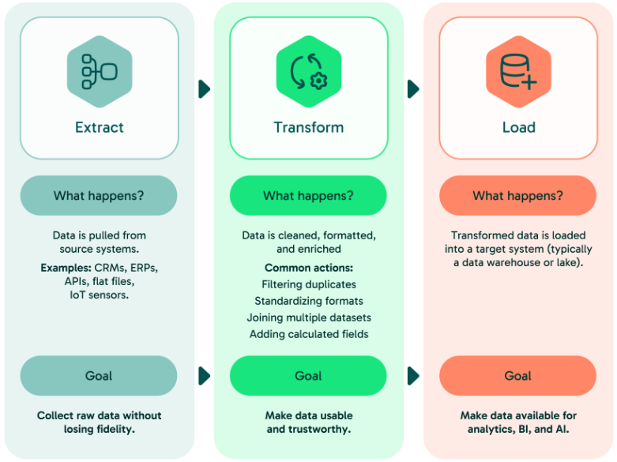
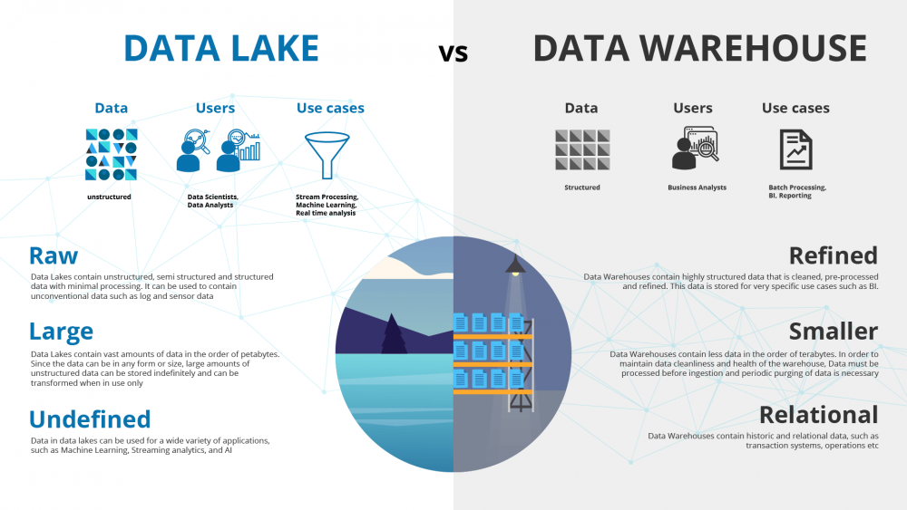
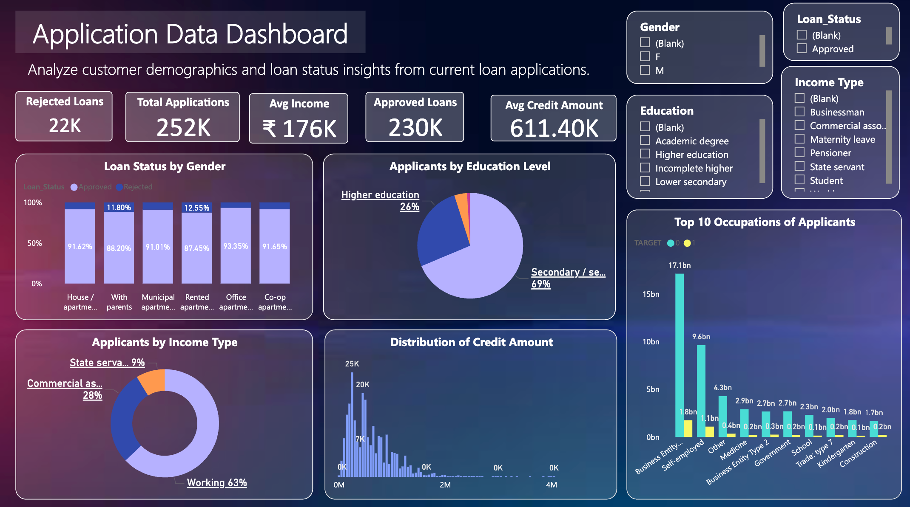
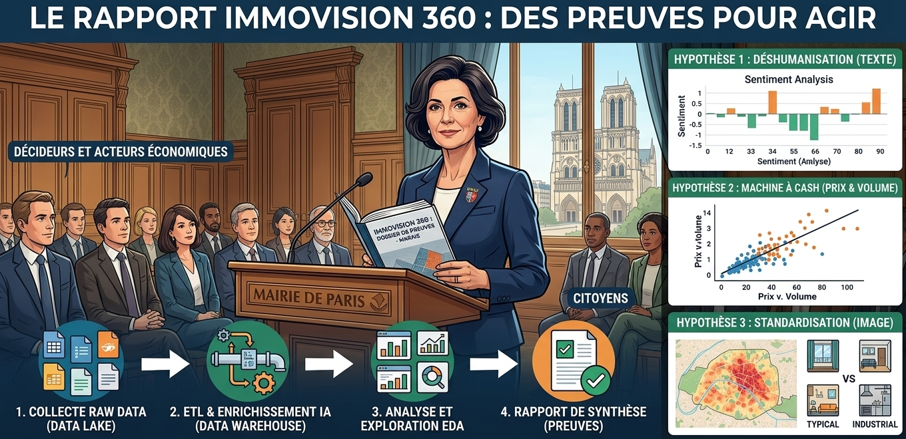

Chapitre 2 - Méthodologie :La "Data Supply Chain" – De la Vision à l'Impact
Après avoir cadré la problématique avec la Mairie de Paris, vous devez concevoir l'architecture technique qui transformera des téraoctets de données brutes en une décision politique. Un projet de Data Science n'est pas une simple suite de scripts isolés ; c'est une chaîne de valeur logique et automatisée.
1. La Vue d'Ensemble : La Pipeline du Projet
L'ingénieur ne se contente pas d'analyser ; il construit une "usine" à données. Voici le cheminement critique :

2. Phase 1 : Collecte & Ingestion – Dompter le Chaos du Data Lake
Pour répondre à la Maire de Paris, nous avons formulé des hypothèses (Gentrification industrielle, déshumanisation, fraude au standing). Le problème ? Aucune donnée unique ne contient la réponse. Pour prouver une intuition politique, l'ingénieur doit fusionner des mondes qui ne se parlent pas. C’est là qu’intervient la Multimodalité. Pour valider nos hypothèses, nous avons besoin de :
- Chiffres (Le "Quoi") : Prix, volumes, nombre de biens par hôte.
- Mots (Le "Comment") : Ressenti des voisins, vocabulaire des voyageurs.
- Images (Le "Standing") : Détection de l'authenticité vs standardisation hôtelière.
L'objectif de cette phase est la création d'un Data Lake. Contrairement à une base de données classique, le Lake accepte tout sans poser de questions (schéma à la lecture).
Dans une base de données classique comme MySQL ou PostgreSQL, tout est régi par le "Schema-on-Write" (Schéma à l'écriture). Avant d'insérer la moindre donnée, vous devez définir des tables, des colonnes et des types (Integer, Varchar, Date).
Le problème de notre projet "ImmoVision 360" :
- Comment stocker une photo haute résolution d'un appartement du Marais dans une cellule de tableau ?
- Comment stocker des milliers de commentaires textuels sans savoir à l'avance quelle sera leur longueur ou leur langue ?
- Comment intégrer un fichier CSV brut sans perdre les lignes mal formées ?
Le constat : Les bases de données classiques ne sont pas faites pour stocker des vidéos, des images ou du CSV en brut. Elles sont faites pour stocker de l'information déjà "digérée".
Contrairement à la base de données qui est une bibliothèque rangée, le Data Lake est un réservoir naturel. Il accepte tout, sans poser de questions. On parle ici de "Schema-on-Read" (Schéma à la lecture) : on stocke d'abord, on réfléchira à la structure plus tard, au moment de l'analyse.
Un Data Lake, c'est quoi concrètement ?
Ce n'est pas un logiciel magique, c'est une technologie de Stockage d'Objets (Object Storage). Contrairement à un système de fichiers classique qui organise tout en hiérarchie complexe, l'Object Storage traite chaque donnée (une image, un log, un CSV) comme une unité plate avec un identifiant unique.
Les standards de l'industrie pour créer ce Lake sont :
- AWS S3 : Le leader du Cloud.
- MinIO : L'alternative Open-Source (que vous pouvez installer sur votre propre serveur) qui simule le fonctionnement de S3.
- Système de fichiers distribué : Un serveur de fichiers organisé de manière rigoureuse (ex:
/data/raw/).

Dans le cadre de la gentrification du Marais, le Data Lake est notre "scène de crime" intacte.
L'objectif de cette phase 1 est de créer cette Zone de Landing. C'est le point d'entrée unique de toutes nos sources hétérogènes.
Voir détails...
🚩 La Check-list de l'Ingénieur
Avant de coder votre script d'ingestion, un ingénieur doit valider ces 7 piliers. Ce ne sont pas des détails, ce sont les fondations de votre architecture de données.
1. Format & Préservation (Raw vs Processed)
La question : Dois-je convertir mes images en binaire (Base64) ou mes CSV en formats compressés (Parquet) dès l'entrée ?
L'élément de réponse : NON. Dans le Data Lake, on garde le format natif (.jpg, .csv). Pourquoi ? Parce que si votre futur modèle d'IA a besoin des métadonnées EXIF d'une photo (coordonnées GPS cachées dans l'image), une conversion prématurée pourrait les détruire à jamais.
2. Stratégie de Partitionnement (L'Organisation)
La question : Comment organiser mon Lake pour ne pas qu'il devienne un "Data Swamp" (marécage) illisible ?
L'élément de réponse : Utilisez une structure temporelle et thématique.
- Exemple :
/data/raw/2026-03-27/marais/listings/ - Pourquoi ? Cela permet de rejouer les données d'une journée précise en cas d'erreur et facilite le balayage par les outils de calcul (Spark/Python).
3. Vitesse d'Ingestion : Batch vs Streaming
La question : Est-ce que je traite un stock de fichiers (Batch) ou un flux en continu (Streaming) ?
L'élément de réponse : Pour l'étude du Marais, nous sommes en Batch (fichiers historiques). Cependant, votre code doit être modulaire. Un bon ingénieur anticipe le "Temps Réel" : si demain la Mairie veut une alerte dès qu'un nouvel appartement "industriel" est publié, votre script d'ingestion doit pouvoir s'adapter sans être réécrit de zéro.
4. Le Principe d'Idempotence (La Sécurité)
La question : Que se passe-t-il si mon script d'ingestion plante à 50% à cause d'une coupure réseau ?
L'élément de réponse : Votre opération doit être Idempotente. Cela signifie que relancer le script 1 fois ou 100 fois doit donner le même résultat final, sans créer de doublons.
Technique : Vérifiez si le fichier existe déjà dans le Lake avant de le copier, ou utilisez des sommes de contrôle (Hash MD5).
5. Intégrité & Cohérence (La Jointure Physique)
La question : Ai-je bien une image pour chaque ligne de mon fichier CSV ?
L'élément de réponse : C'est le test de la "Jointure Orpheline". Un Data Lake n'impose pas de contrainte d'intégrité (contrairement au SQL). C'est donc à votre script de vérifier que l'image img_123.jpg citée dans le listing existe réellement dans le dossier images. Sans cette vérification, votre Phase 2 (IA) plantera sur des fichiers inexistants.
6. Vérification Quantitative (Le Bilan)
La question : Ai-je bien reçu 100% des fichiers attendus ?
L'élément de réponse : Ne faites jamais confiance au transfert. Votre script d'ingestion doit générer un log de succès.
Exemple : "1500 lignes lues dans le CSV, 1498 images trouvées, 2 erreurs logguées". Cette traçabilité est la signature d'un travail professionnel.
7. Architecture de Stockage : Local ou Distribué ?
La question : Mon disque dur suffit-il, ou dois-je passer sur une architecture distribuée ?
L'élément de réponse : Tout dépend du Volume et de la Disponibilité.
- Stockage Local (Monolithique) : Idéal pour le prototypage ou les petits volumes (ex: 5 000 images du Marais). C'est simple, mais si votre disque crash, tout est perdu. C'est un "Single Point of Failure".
- Stockage Distribué (HDFS, S3, MinIO Cluster) : La donnée est découpée en morceaux (shards) et répliquée sur plusieurs serveurs physiques.
Avantage : Si un serveur tombe, la donnée reste accessible ailleurs (Haute Disponibilité). Vous pouvez stocker des Pétaoctets de photos de tout Paris sans changer de code.
Technique : On utilise souvent le protocole S3 (Simple Storage Service) qui est devenu la norme. Même en local, on simule ce comportement avec MinIO pour que notre code soit "Cloud-Ready".
Résumé :
En Phase 1, vous n'êtes pas encore un analyste, vous êtes un Logisticien. Votre but est de garantir que la "matière première" (la donnée) arrive à l'usine (la Phase 2) de manière complète, saine et reproductible.
3. Phase 2 : ETL & Feature Engineering
Le Data Lake est désormais rempli, mais pour la Maire de Paris, ce réservoir n'est encore qu'un immense "bruit" numérique. Elle ne peut pas fonder une politique d'urbanisme sur 5 000 images éparpillées et 10 000 commentaires bruts. Votre mission en Phase 2 est de structurer l'invisible.
Nous allons donner du sens au chaos en transformant :
- Des pixels en scores d'authenticité hôtelière.
- Du texte en indices de nuisance sociale.
- Des chiffres isolés en une base de données cohérente.
En ingénierie de données, nous passons de la couche Bronze (le vrac) à la couche Silver (la donnée raffinée). Ce processus repose sur un moteur à trois temps que tout Data Scientist doit maîtriser : l'ETL (Extract, Transform, Load).
- Extract (Extraire) : Aller chercher les données multimodales (images, textes, CSV) dans le Data Lake.
- Transform (Transformer) : Nettoyer les erreurs, normaliser les formats et injecter de l'intelligence pour créer des nouveaux scores.
- Load (Charger) : Injecter le résultat final dans un Data Warehouse.

À la fin de cette phase, l'idée est d'aboutir à un Data Warehouse (une base de données structurée, par exemple sous PostgreSQL). Contrairement au lac de données, ce "magasin de données" est parfaitement organisé, indexé et prêt à être analysé et exploré. C'est cette base de données propre qui permettra de répondre précisément aux questions politiques de la municipalité.

1. Extract (L'Extraction Intelligente)
L'extraction est l'acte de "lire" les sources hétérogènes que nous avons sécurisées en Phase 1.
- Le défi de la Multimodalité : Contrairement à un projet classique, l'extraction ici est triple. Vous devez extraire des flux de texte (les avis), des matrices de pixels (les photos) et des tables numériques (les prix).
- La Connexion aux Sources : L'ingénieur doit écrire des connecteurs capables de lire aussi bien un fichier local qu'une partition sur un stockage distribué (S3/MinIO).
- Le filtrage sélectif : On n'extrait pas forcément tout. Pour gagner du temps, on peut décider d'extraire uniquement les données concernant le périmètre du Marais, laissant le reste du Data Lake au repos.
2. Transform (Le Raffinage et l'Enrichissement)
Dans cette étape, nous transformons le "minerai brut" du Data Lake en un produit fini. On ne se contente pas de nettoyer les erreurs, on augmente la donnée pour qu'elle réponde aux questions complexes de la Maire de Paris.
A. Le Nettoyage et la Normalisation (La mise aux normes)
Avant d'ajouter de la valeur, il faut que la base soit saine. C'est le "repassage" de la donnée :
- Normalisation des formats : S'assurer que les prix sont tous en Euros, les surfaces en
m^2, et les dates au format standard (AAAA-MM-JJ). - Gestion des valeurs aberrantes (Outliers) : Identifier les données qui faussent les statistiques (ex: un appartement de 2
m^2ou un prix de 0 €). - Dédoublonnement : Fusionner les annonces identiques présentes sur plusieurs plateformes pour ne pas fausser le volume réel de l'offre dans le Marais.
B. L'Enrichissement (Donner de la profondeur à la donnée)
Enrichir, c'est créer de nouvelles colonnes (features) qui n'existaient pas dans le Data Lake en croisant notre fichier avec d'autres savoirs. On distingue deux grandes familles :
1. L'Enrichissement Déterministe (Algorithmique & Externe)
On utilise des règles logiques ou des bases de données tierces :
- Géocodage : Transformer une adresse en coordonnées GPS pour calculer la distance aux monuments ou aux zones de bruit.
- Croisement Légal (Lookup) : Vérifier si l'ID de l'annonce existe dans le registre officiel des loueurs de la Ville de Paris.
- Calculs Métier : Créer des indicateurs comme le "Prix moyen au
m^2" ou le "Ratio de disponibilité annuelle". - Contexte Temporel : Marquer les données selon les saisons touristiques ou les événements (ex: Fashion Week).
2. L'Enrichissement par Inférence (Intelligence Artificielle)
On utilise des modèles pour "deviner" des informations que l'œil humain ne peut pas traiter à grande échelle :
- IA Vision : Analyser les photos pour détecter si la décoration est "standardisée/hôtelière" ou "personnelle/habitée".
- IA NLP : Analyser les commentaires pour extraire un sentiment global ou détecter des mots-clés de nuisances (fêtes, bruit, clés sous le paillasson).
Règle d'or : Lors de l'enrichissement, ne remplacez jamais la donnée d'origine. Gardez la colonne brute (ex: prix_brut) et créez une nouvelle colonne enrichie (ex: prix_nettoye). Cela permet de vérifier vos calculs à tout moment sans avoir à retourner dans le Data Lake.
3. Load (Le Chargement Structuré)
Une fois la donnée "propre" et "augmentée", elle doit être stockée de manière à ce qu'un humain ou un logiciel de visualisation puisse l'interroger instantanément.
- Vers le Data Warehouse (PostgreSQL) : On injecte les résultats dans une base de données relationnelle. Contrairement au Data Lake, ici chaque donnée a une place précise, une taille définie et un type (ex:
Score_Authenticitéest unFLOAT). - Indexation : L'ingénieur crée des "index" sur les colonnes clés (comme le quartier ou l'ID de l'hôte) pour que les recherches de la Maire soient ultra-rapides, même sur des millions de lignes.
- La "Source Unique de Vérité" : À la fin du Load, vous avez une table parfaite où chaque ligne raconte l'histoire complète d'un logement : son prix, son standing détecté par l'IA, et le niveau de nuisance rapporté par les voisins.
Règle d'or : Une fois le Load terminé, votre Data Warehouse devient la seule et unique source de vérité. Si quelqu'un pose une question sur les prix dans le Marais, il ne doit plus regarder le CSV d'origine ni le Data Lake, mais uniquement cette base PostgreSQL. C'est la garantie que tout le monde travaille sur les mêmes chiffres validés.
4. Phase 3 : EDA & Rapport d'Impact – Le Storytelling Décisionnel (L'Art de Convaincre la Mairie)
Votre Data Warehouse PostgreSQL est une mine d'or, mais la Maire de Paris ne lira jamais une table SQL. Pour elle, SELECT * FROM listings WHERE score_nuisance > 0.8 n'est qu'une ligne de code. Votre mission en Phase 3 est de donner une voix à la donnée. Vous allez transformer des colonnes de chiffres en une démonstration visuelle implacable : le Storytelling.
L'objectif n'est plus de stocker, mais d'explorer (EDA - Exploratory Data Analysis) pour trouver les preuves de vos hypothèses de départ. C'est ici que l'on crée le pont entre l'ingénierie et la décision politique. Comme on le voit sur la Figure suivante, l'EDA est l'entonnoir qui permet de passer des données brutes aux conclusions opérationnelles pour la Maire. C'est un processus systématique qui garantit que l'histoire que nous allons raconter est scientifiquement exacte.

Pour mener à bien cette exploration, nous suivons un parcours rigoureux en 6 étapes, illustré par la Figure suivante. Ce tunnel permet de "nettoyer" une dernière fois l'esprit de l'analyste avant de tirer des conclusions.

- Distinguish Attributes : Identifier quelles colonnes sont des catégories (quartiers) et lesquelles sont des mesures (prix, scores).
- Univariate Analysis : Regarder chaque variable seule. Exemple : Quelle est la moyenne des prix dans le Marais ?
- Bi-/Multivariate Analysis : C'est le cœur du projet. On croise les variables. Exemple : Est-ce que le score de "Gentrification" augmente quand le prix augmente ?
- Detect Aberrant/Missing Values : Traiter les derniers oublis ou erreurs de saisie.
- Detect Outliers : Isoler les cas extrêmes (l'hôte qui possède 100 appartements à lui seul).
- Feature Engineering : Créer les derniers indicateurs de synthèse pour le rapport final.
C Une fois ce travail de fond terminé, nous aboutissons au Storytelling.'est le moment où l'invisible devient visible.

Plutôt que de longs discours, nous utilisons des outils visuels puissants :
- Les Joint Plots (Hexagones) : Pour voir où se concentrent massivement les biens immobiliers et détecter des clusters de "standardisation".
- Les Scatter Plots avec Régression : Pour prouver mathématiquement la corrélation entre deux phénomènes (ex: hausse des prix vs baisse de l'authenticité).
- Les Pair Plots (Matrices) : Pour observer d'un seul coup d'œil toutes les relations possibles entre le prix, le standing, la localisation et le sentiment des voyageurs.
Règle d'or : L'EDA sert à découvrir la vérité, pas à fabriquer une vérité qui arrange la Maire. Si vos graphiques montrent qu'un quartier n'est pas gentrifié, votre devoir est de le dire. La crédibilité de l'ingénieur repose sur son honnêteté intellectuelle face aux chiffres.
Une fois ces analyses visuelles terminées, votre rôle est de compiler vos découvertes dans un Rapport de Synthèse (de 2 à 10 pages). Ce document n'est pas un simple exercice technique ; c'est le support qui permettra à la Maire de valider ou d'infirmer ses trois hypothèses initiales avec des preuves irréfutables :
- L'Hypothèse de la Déshumanisation (Analyse Textuelle) : En croisant les commentaires et les scores de sentiment, vous prouvez si le lien social se brise réellement. L'absence physique des hôtes et la multiplication des "boîtes à clés" sont-elles devenues la norme dans le Marais ?
- L'Hypothèse de la "Machine à Cash" (Analyse Prix & Volume) : Vos corrélations montrent-elles un lien direct entre la hausse des loyers pour les Parisiens et la concentration massive de biens entre les mains de quelques multi-propriétaires ?
- L'Hypothèse de la Standardisation (Analyse Image) : Vos scores d'authenticité confirment-ils que des immeubles entiers ont été transformés en "produits financiers" uniformes, vidés de toute âme résidentielle ?
Grâce à ce rapport, la Maire de Paris dispose désormais d'un dossier solide. Elle ne parle plus par "intuition", mais avec des preuves mathématiques et visuelles. Elle peut maintenant justifier ses décisions réglementaires auprès des autres décideurs, des acteurs économiques et des citoyens.
La Maire a tout compris, elle est confiante : vous lui avez donné les clés pour protéger l'identité du quartier face à l'industrialisation sauvage.

Section 5 - Autres architectures (voir détails...)
5. Autre:
Il est crucial de comprendre que la pipeline "Data Lake -> ETL -> Data Warehouse -> EDA" est le standard industriel classique, mais ce n'est pas la seule option. Selon le projet, l'architecture peut muter :
L'approche "Full Data Lake" (Modern Data Stack) :
On stocke tout dans le Lake et on utilise des outils de calcul (comme Spark ou Presto) pour interroger directement les fichiers bruts.
Avantage : Très flexible et rapide à mettre en place.
Inconvénient : Peut devenir un "Data Swamp" (marécage de données) si personne ne documente ce qu'il y a dedans.
L'approche "Data Lakehouse" (Le meilleur des deux mondes) :
C'est la tendance actuelle. On garde la souplesse du Data Lake (stockage d'images, fichiers texte) mais on y ajoute une couche logicielle qui permet d'avoir la rigueur et la performance du Data Warehouse.
L'approche "Direct Ingestion" (Small Data) :
Pour des petits volumes, on peut parfois sauter l'étape du Data Lake et charger directement les données nettoyées dans une base SQL.
Risque : Si la source change ou si vous faites une erreur de calcul, la donnée d'origine est perdue.